Landing pages and web apps
Landing Pages und Web-Apps
One built stylesheet with tokens, base styles and components: hero, feature boxes, tabs, dialogs, tables, conversations. Every shrippen landing page links it, so a change here reaches all of them.
Ein gebautes Stylesheet mit Tokens, Grundstilen und Komponenten: Hero, Funktionskästen, Tabs, Dialoge, Tabellen, Gespräche. Jede shrippen-Landing-Page bindet es ein, eine Änderung hier erreicht also alle.
Apps and widgets
Apps und Widgets
The QML module Kante brings the same shapes, sizes and motion to apps, KantePlasma wraps the Plasma components for widgets. Tested with qmltestrunner on every build.
Das QML-Modul Kante bringt dieselben Formen, Größen und Bewegungen in Apps, KantePlasma umhüllt die Plasma-Komponenten für Widgets. Bei jedem Build mit qmltestrunner getestet.
One source of truth
Eine Quelle
tokens/palette.json feeds the CSS, the QML palette and Knust's Kimai palette. A check fails the build on any raw colour or font outside the tokens.
tokens/palette.json speist das CSS, die QML-Palette und Knusts Kimai-Palette. Eine Prüfung bricht den Build bei jeder festen Farbe oder Schrift außerhalb der Tokens ab.
Variants
Varianten
Same components, classes and roles; only the values underneath change.
Gleiche Komponenten, Klassen und Rollen; nur die Werte darunter ändern sich.
| WhereWo | CharacterCharakter | |||
|---|---|---|---|---|
| Kante | Default, dark (Gruvbox), light “Leinen” for apps | Standard, dunkel (Gruvbox), hell „Leinen“ für Apps | Warm neutrals, yellow for action, cyan for focus and links | Warme Neutraltöne, Gelb für Aktionen, Cyan für Fokus und Links |
| Kante Light | Apps next to Breeze / Kirigami | Apps neben Breeze / Kirigami | All colours from the platform, Kante brings shape and type | Alle Farben von der Plattform, Kante bringt Form und Schrift |
| Kante Gold | data-kante="gold", Kintsugi only | data-kante="gold", nur Kintsugi | Lacquer and gold leaf: gilded cut edges, Spectral titles, gliding motion | Lack und Blattgold: vergoldete Schnittkanten, Spectral-Titel, gleitende Bewegung |
Use it
Einbinden
- Landing page: start from
templates/landing.html, it links the stylesheet. - Offline web app: vendor
shrippen.css,shrippen.js,fonts.cssandfonts/fromhttps://shrippen.github.io/v1/unchanged. - Qt Quick / Kirigami app: copy
qml/Kante; Plasma widget: alsoqml/KantePlasma. - Missing something? It goes into Kante first, then into the project.
- Landing Page: mit
templates/landing.htmlanfangen, sie bindet das Stylesheet ein. - Web-App ohne Netz:
shrippen.css,shrippen.js,fonts.cssundfonts/vonhttps://shrippen.github.io/v1/unverändert übernehmen. - Qt-Quick-/Kirigami-App:
qml/Kantekopieren; Plasma-Widget: zusätzlichqml/KantePlasma. - Fehlt etwas? Es kommt zuerst in Kante, dann ins Projekt.
For Kimai: Knust and the plugin kit
Für Kimai: Knust und das Plugin-Kit
Knust is Kante's spinoff for Kimai, a theme plugin on top of Tabler with its palette generated from Kante. The plugin kit (kpu-* macros, CSS and JS) says what an element is; Knust decides how it looks. Both live in this repository.
Knust ist Kantes Ableger für Kimai, ein Theme-Plugin auf Tabler, dessen Palette aus Kante erzeugt wird. Das Plugin-Kit (kpu-*-Makros, CSS und JS) sagt, was ein Element ist; Knust entscheidet, wie es aussieht. Beide liegen in diesem Repository.
Changes
Änderungen
-
1.43
Parts for a mixing desk: drag a pane's size, menus with sections and shortcuts, a popover, swatches, option tiles.
Bausteine für ein Mischpult: Größen ziehen, Menüs mit Abschnitten und Kürzeln, ein Popover, Farbfelder, Auswahlkacheln.
NewNeu
KanteSplitHandle: the grip between two panes; drag, arrows or a double click to the default.KanteMenuItemandKanteMenuSection: menu items with icon, value and shortcut asKanteKeycap; headings that group them.KantePopover: a card at a button for settings that apply at once.KanteSwatchPicker,KanteTableHeader,KanteOptionTile;KanteToastgets an action (Undo).
KanteSplitHandle: der Griff zwischen zwei Bereichen; ziehen, Pfeiltasten oder Doppelklick zurück zum Standard.KanteMenuItemundKanteMenuSection: Menüeinträge mit Icon, Wert und Kürzel alsKanteKeycap; Überschriften, die sie gruppieren.KantePopover: eine Karte am Knopf für Einstellungen, die sofort gelten.KanteSwatchPicker,KanteTableHeader,KanteOptionTile;KanteToastbekommt eine Aktion (Rückgängig).
FixedBehoben
KanteSheetSkin,KanteMessageSkin: after leaving Kante a sheet or inline message kept a hidden platform background, as menus did before 1.42.KanteToaststays while the pointer is over it, then gets its full time again.
KanteSheetSkin,KanteMessageSkin: Nach dem Verlassen von Kante blieb der Plattform-Hintergrund eines Sheets oder einer Meldung verborgen, wie bei Menüs vor 1.42.KanteToastbleibt stehen, solange der Zeiger darauf liegt, und bekommt danach wieder seine volle Zeit.
All changes in 1.43 →Alle Änderungen in 1.43 →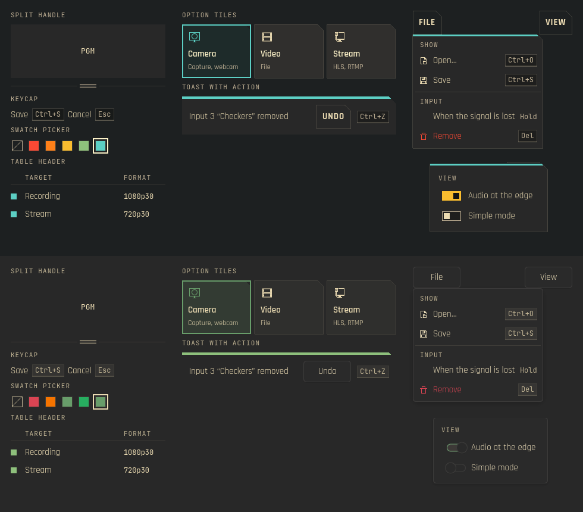
The new parts in Kante (top) and Kante LightDie neuen Teile in Kante (oben) und Kante Light -
1.42
Menus stay opaque after leaving Kante.
Menüs bleiben deckend, nachdem Kante verlassen wurde.
FixedBehoben
KantePopupSkin: switching from Kante to Kante Light or System left menus see-through, their items straight over what lay below. The skin now keeps the platform background and draws its card behind the content; a popup without a background gets the card too.
KantePopupSkin: Nach dem Wechsel von Kante zu Kante Light oder System waren Menüs durchsichtig, die Einträge lagen direkt über dem Inhalt darunter. Der Skin behält jetzt den Plattform-Hintergrund und zeichnet seine Karte hinter den Inhalt; auch ein Popup ohne Hintergrund bekommt sie.
BreakingInkompatibel
KantePopupSkin: the propertykanteBackgroundis gone, and in Kantepopup.backgroundis the hidden platform background; the card iskanteCard.
KantePopupSkin: Die PropertykanteBackgroundentfällt, und in Kante istpopup.backgroundder ausgeblendete Plattform-Hintergrund; die Karte heißtkanteCard.
All changes in 1.42 →Alle Änderungen in 1.42 →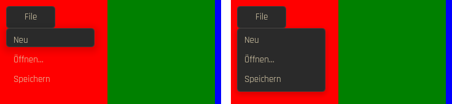
The same menu after leaving Kante, before and afterDasselbe Menü nach dem Verlassen von Kante, vorher und nachher -
1.40
Staves without notes stay quiet.
Notenzeilen ohne Noten bleiben still.
All changes in 1.40 →Alle Änderungen in 1.40 →FixedBehoben
KanteTabStaff,KanteBassStaff: emptying the notes during playback logged aTypeError; the description for screen readers now waits for the current note.
KanteTabStaff,KanteBassStaff: Wurden die Noten während der Wiedergabe geleert, meldete die Konsole einenTypeError; die Beschreibung für Screenreader wartet jetzt auf den aktuellen Ton.
-
1.39
Wizard steps fit narrow windows.
Schritte eines Assistenten passen auch in schmale Fenster.
ImprovedVerbessert
KanteSteps: when the labels no longer fit, only the current step keeps its label; the others show their number or check. Screen readers still hear every step by name.
KanteSteps: passen die Beschriftungen nicht mehr, behält nur der aktuelle Schritt seine; die anderen zeigen Nummer oder Haken. Screenreader hören weiter jeden Schritt mit Namen.
NoteHinweis
KanteStepsis now anItemwith the steps in aRow(it was theRowitself);model,currentandspacingstay. Its own width is always the width with every label, also when it is created asynchronously (aLoader), so it turns compact only under a width set by a layout.
KanteStepsist jetzt einItemmit den Schritten in einerRow(bisher dieRowselbst);model,currentundspacingbleiben. Seine eigene Breite ist immer die mit allen Beschriftungen, auch wenn es asynchron entsteht (einLoader); kompakt wird es nur unter einer Breite, die ein Layout setzt.
All changes in 1.39 →Alle Änderungen in 1.39 →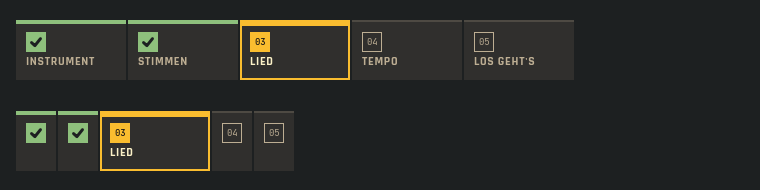
The same steps wide and narrow (demo data)Dieselben Schritte breit und schmal (Demodaten) -
1.38
One main button in the transport: play.
Ein Hauptknopf in der Wiedergabe: Abspielen.
ImprovedVerbessert
KanteTransportBar: loop, metronome and count-in show on or off by the square before the word alone, no longer as filled buttons next to play. Screen readers hear them as check boxes.
KanteTransportBar: Schleife, Metronom und Einzähler zeigen an oder aus nur noch am Kästchen vor dem Wort, nicht mehr als gefüllte Knöpfe neben „Abspielen“. Screenreader lesen sie als Kontrollkästchen.
All changes in 1.38 →Alle Änderungen in 1.38 →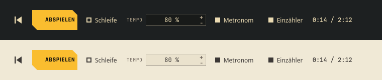
Metronome and count-in on, loop off: the lamp tells the state (Kante and Leinen)Metronom und Einzähler an, Schleife aus: das Kästchen zeigt den Zustand (Kante und Leinen) -
1.37
Ghost notes in tab as printed: the fret in parentheses, nothing more.
Ghost Notes in der Tabulatur wie gedruckt: der Bund in Klammern, sonst nichts.
ImprovedVerbessert
KanteTabLaneandKanteTabStaffno longer draw "( )" above a ghost note's parenthesized fret; in sixteenths the two ran together. A technique result frames the fret instead.
KanteTabLaneundKanteTabStaffzeichnen über dem geklammerten Bund einer Ghost Note kein „( )“ mehr; bei Sechzehnteln lief beides ineinander. Ein Technik-Ergebnis rahmt stattdessen den Bund.
All changes in 1.37 →Alle Änderungen in 1.37 →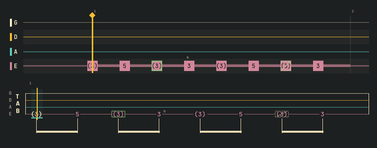
Ghost notes in lane and tab: the fret in parentheses; a result frames it (demo data)Ghost Notes in Lane und Tab: der Bund in Klammern; ein Ergebnis rahmt ihn (Demodaten) -
1.36
Key figures read as one: screen readers hear "Practised: 7 min".
Kennzahlen am Stück: Screenreader hören „Geübt: 7 min“.
All changes in 1.36 →Alle Änderungen in 1.36 →FixedBehoben
KanteKpihas one accessible name of label and value, the change as description. Before, figure and label were read as two loose texts.
KanteKpihat einen Namen aus Beschriftung und Wert, die Änderung als Beschreibung. Bisher wurden Zahl und Beschriftung als zwei lose Texte vorgelesen.
-
1.35
Loops in tab and notes: tablature and bass staff show the loop range the tab lane already showed. From lmix: a page bar, dark picture areas and vertical sliders.
Schleifen in Tab und Noten: Tabulatur und Bassnoten zeigen den Loop-Bereich, den bisher nur die Tab-Lane zeigte. Aus lmix: eine Seitenleiste, dunkle Bildflächen und senkrechte Schieberegler.
NewNeu
KanteTabStaffandKanteBassStaff:loopStartandloopEndas on the tab lane, a tint with bracket edges, so a looped passage is visible in every view, not only by colour.- A loop across a line break continues on the next line; brackets only where it really starts and ends.
KantePageBar: the bar at the foot of an app window that switches between a few large pages. The current page is raised with a marker line; a dot on a tab says something runs there, Warning and Error as a diamond, so the kind is not colour alone. Keyboard and screen readers included.KanteStyle.stageColorandstageTextColor: the ground of monitors and video previews, dark in every kind and in Leinen too, as the web.stage.KanteSliderSkindraws vertical sliders (faders): the track runs along the height, filled from the bottom.
KanteTabStaffundKanteBassStaff:loopStartundloopEndwie in der Tab-Lane, eine Tönung mit Klammerkanten, damit eine Schleife in jeder Ansicht zu sehen ist, nicht nur an der Farbe.- Eine Schleife über einen Zeilenumbruch geht in der nächsten Zeile weiter; Klammern nur, wo sie wirklich beginnt und endet.
KantePageBar: die Leiste am Fuß eines App-Fensters, die zwischen wenigen großen Seiten umschaltet. Die aktuelle Seite ist hervorgehoben und hat eine Markierungslinie; ein Punkt auf einem Reiter zeigt, dass dort etwas läuft, Warnung und Fehler als Raute, damit die Art nicht nur an der Farbe hängt. Mit Tastatur und Screenreader.KanteStyle.stageColorundstageTextColor: der Grund von Monitoren und Videovorschauen, dunkel in jeder Art und auch in Leinen, wie.stageim Web.KanteSliderSkinzeichnet senkrechte Schieberegler (Fader): Die Spur läuft entlang der Höhe und füllt sich von unten.
NoteHinweis
- Additions only: existing calls keep working; without a loop nothing changes, horizontal sliders look as before.
- Nur Ergänzungen: bestehende Aufrufe funktionieren weiter; ohne Schleife ändert sich nichts, waagerechte Schieberegler sehen aus wie bisher.
All changes in 1.35 →Alle Änderungen in 1.35 →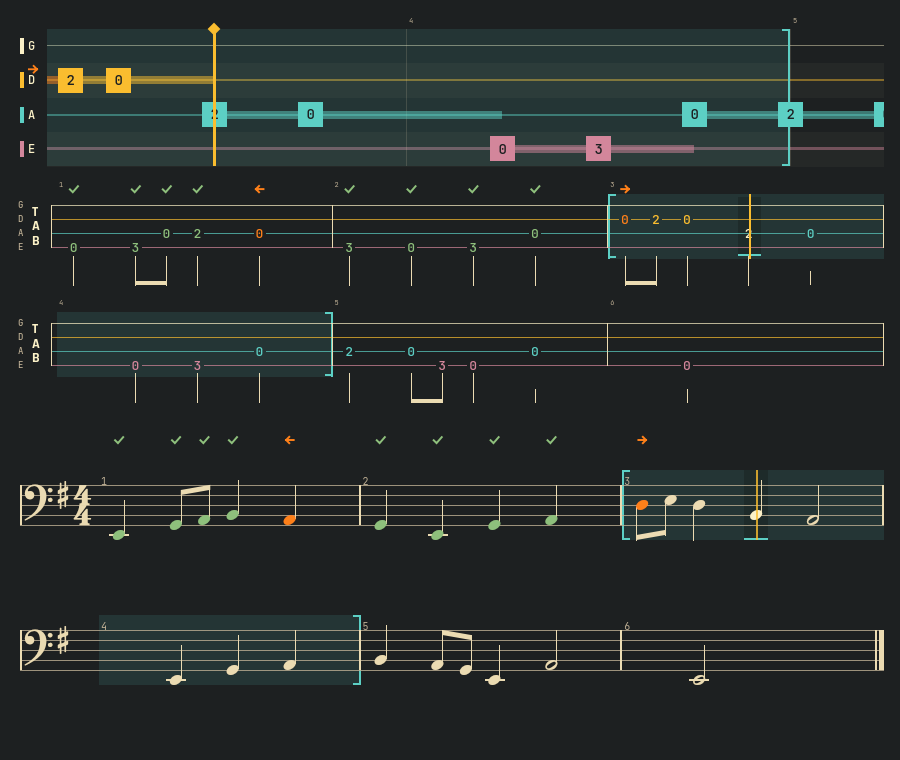
Bars 3 and 4 looped in lane, tab and staff (demo data)Takte 3 und 4 als Schleife in Lane, Tab und Noten (Demodaten) 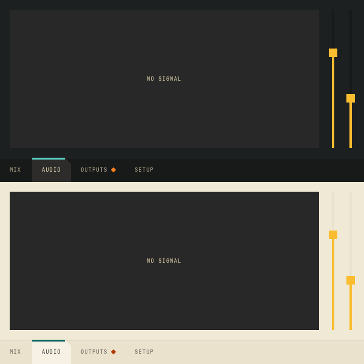
Page bar, picture area and vertical sliders, in Kante and LeinenSeitenleiste, Bildfläche und senkrechte Schieberegler, in Kante und Leinen -
1.34.1
A date field with a two-digit year keeps the year it shows.
Ein Datumsfeld mit zweistelliger Jahreszahl behält das Jahr, das es zeigt.
FixedBehoben
KanteDateFieldwith a short format such asdd.MM.yyorM/d/yy: the field shows "26" and read it back as 1926 when it was entered and left. Two-digit years now lie in the century around today, at most 20 years ahead. In Plasmai a running entry started 100 years back, and Kimai refused a stopped one as too long.
KanteDateFieldmit einem Kurzformat wiedd.MM.yyoderM/d/yy: Das Feld zeigt „26“ und las das beim Betreten und Verlassen als 1926 zurück. Zweistellige Jahre liegen jetzt im Jahrhundert um heute, höchstens 20 Jahre voraus. In Plasmai begann ein laufender Eintrag 100 Jahre früher, und Kimai lehnte einen beendeten als zu lang ab.
NoteHinweis
- Fields with a four-digit year (the default
dd.MM.yyyy) were not affected.
- Felder mit vierstelligem Jahr (der Standard
dd.MM.yyyy) waren nicht betroffen.
All changes in 1.34.1 →Alle Änderungen in 1.34.1 →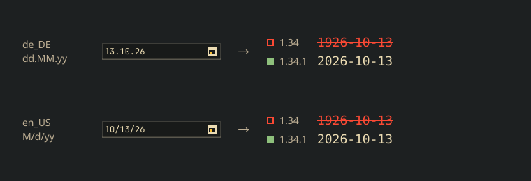
What the field reads back from its own text, German and US formatWas das Feld aus seinem eigenen Text zurückliest, deutsches und US-Format -
1.34
Japanese in pieces gets a Japanese face, not a Chinese one.
Japanisch in Stücken bekommt eine japanische Schrift statt einer chinesischen.
NewNeu
KanteStyle.japaneseFamilyandjapaneseFont(): the first installed Japanese face of a preference list.
KanteStyle.japaneseFamilyundjapaneseFont(): die erste installierte japanische Schrift einer Vorzugsliste.
All changes in 1.34 →Alle Änderungen in 1.34 →FixedBehoben
- Ruby text, pitch curve and correction diff draw Japanese in a Japanese face. Under a German or English locale single kanji fell back to a Chinese face: other glyph forms, a lower baseline, a centred 。.
- Ruby-Text, Pitch-Kurve und Korrektur-Diff zeigen Japanisch in einer japanischen Schrift. Unter deutscher oder englischer Locale fielen einzelne Kanji auf eine chinesische Schrift zurück: andere Zeichenformen, tiefere Grundlinie, mittiges 。.
-
1.33
Words to look up in Japanese text: a click on a word, for Kaiwa's dictionary.
Wörter zum Nachschlagen in japanischem Text: ein Klick auf ein Wort, für Kaiwas Wörterbuch.
NewNeu
KanteRubyText: segments form words; withinteractivea word underlines on hover and opens with a click, or with Tab, the arrow keys and Enter. Screen readers hear the focused word.
KanteRubyText: Segmente bilden Wörter; mitinteractiveunterstreicht sich ein Wort beim Darüberfahren und öffnet sich per Klick oder mit Tab, Pfeiltasten und Eingabe. Screenreader lesen das gewählte Wort vor.
All changes in 1.33 →Alle Änderungen in 1.33 →NoteHinweis
- Additions only: existing calls keep working.
- Nur Ergänzungen: bestehende Aufrufe funktionieren weiter.
-
1.32
Dead notes for Kontra: a note muted without pitch gets its own sign.
Dead Notes für Kontra: ein gedämpfter Ton ohne Tonhöhe bekommt ein eigenes Zeichen.
NewNeu
KanteTechniqueMark: the dead note "x", with played, another technique or not heard as for every technique.- Tab lane and tablature write a dead note's fret as x, as in printed tab.
KanteTechniqueMark: die Dead Note „x“, mit gespielt, andere Technik oder nicht gehört wie bei jeder Technik.- Tab-Lane und Tabulatur schreiben den Bund einer Dead Note als x, wie in gedruckter Tabulatur.
All changes in 1.32 →Alle Änderungen in 1.32 →NoteHinweis
- Additions only: existing calls keep working.
- Nur Ergänzungen: bestehende Aufrufe funktionieren weiter.
-
1.31
Technique marks for Kontra: tab, lane and staff show how a note is to be played, and whether it was.
Technik-Zeichen für Kontra: Tab, Lane und Noten zeigen, wie eine Note zu spielen ist und ob sie so gespielt wurde.
NewNeu
KanteTechniqueMark: the tab signs for slide, hammer-on, pull-off, slap, pop and ghost note; played, another technique or not heard show by frame and strike, not by colour alone.- Tab lane, tablature and bass staff take a technique and its result per note; a ghost note's fret reads in parentheses.
KanteTechniqueMark: die Tab-Zeichen für Slide, Hammer-on, Pull-off, Slap, Pop und Ghost Note; gespielt, andere Technik oder nicht gehört zeigen Rahmen und Durchstreichung, nicht nur die Farbe.- Tab-Lane, Tabulatur und Bassnoten nehmen je Note eine Technik und ihr Ergebnis; der Bund einer Ghost Note steht in Klammern.
NoteHinweis
- Additions only: existing calls keep working.
- Nur Ergänzungen: bestehende Aufrufe funktionieren weiter.
All changes in 1.31 →Alle Änderungen in 1.31 →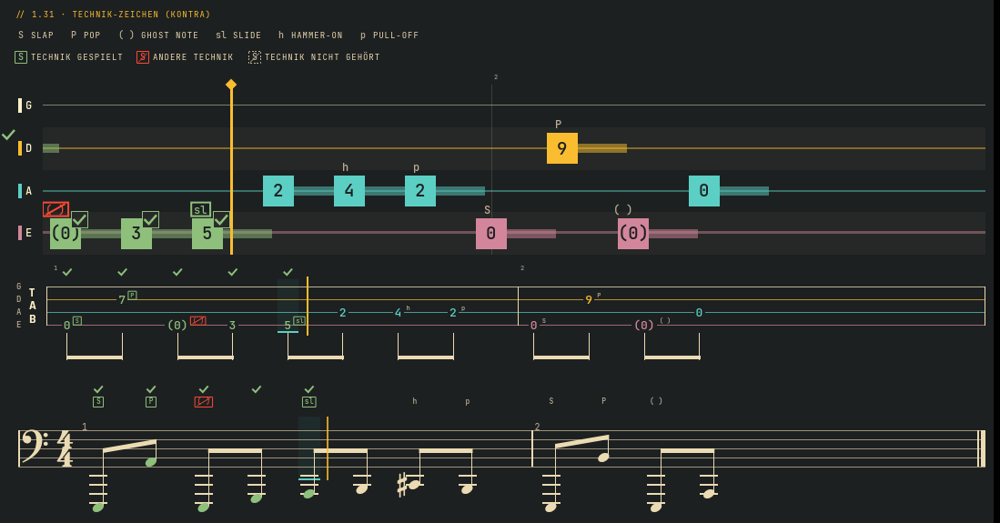
Technique signs in lane, tab and staff (demo data)Technik-Zeichen in Lane, Tab und Noten (Demodaten) -
1.30
A keyboard for Kontra's bass over MIDI: players who play bass lines on keys see the notes fall onto the keys they play.
Eine Klaviatur für Kontras Bass über MIDI: wer Basslinien auf Tasten spielt, sieht die Noten auf die Tasten fallen, die zu spielen sind.
NewNeu
KanteKeyboard: piano keys for a MIDI range with markers by shape (current, next, root, scale) and the note state signs; key names from the app; optionally usable by keyboard and click.KanteKeyLane: falling notes over the keys, with the tab lane's notes, timing and state signs, so an app feeds both the same data.KanteKeyLayout: the key geometry both share, with piano proportions.
KanteKeyboard: Klaviertasten für einen MIDI-Bereich mit Markierungen nach Form (aktuell, nächste, Grundton, Tonleiter) und den Zeichen der Notenzustände; Tastennamen von der App; auf Wunsch mit Tastatur und Klick bedienbar.KanteKeyLane: fallende Noten über den Tasten, mit Noten, Zeitachse und Zustandszeichen der Tab-Lane, so dass eine App beiden dieselben Daten gibt.KanteKeyLayout: die gemeinsame Tastengeometrie, in Klavierproportionen.
NoteHinweis
- Additions only: existing calls keep working.
- Nur Ergänzungen: bestehende Aufrufe funktionieren weiter.
All changes in 1.30 →Alle Änderungen in 1.30 →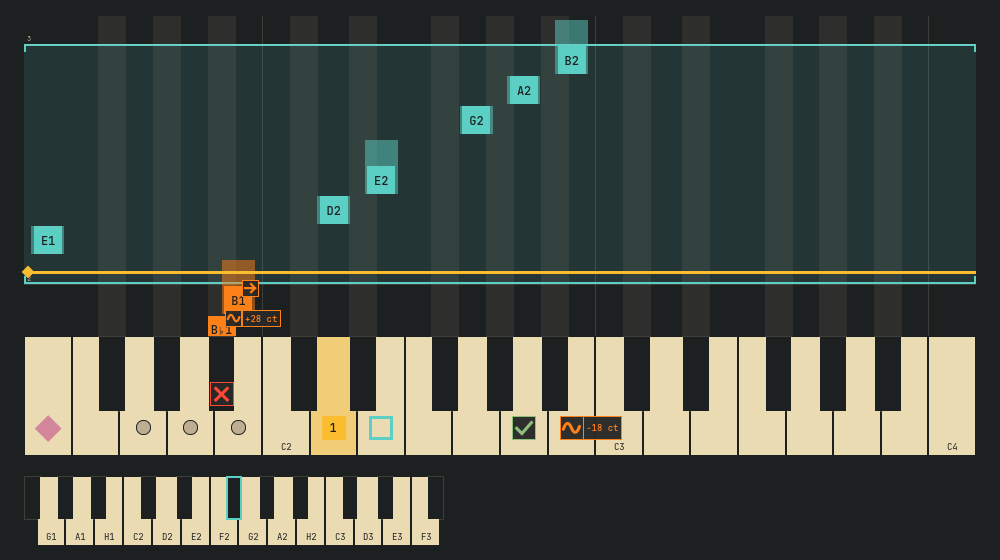
Key lane over the keyboard (demo data)Notenspur über der Klaviatur (Demodaten) -
1.29
Colour labels in apps and an audio meter for mixers, for lmix's Qt Console.
Farblabels in Apps und ein Audio-Meter für Mischpulte, für die Qt-Konsole von lmix.
NewNeu
- Seven colour labels, the same on the web and in apps: red, orange, yellow, green, cyan, blue, purple. A label keeps its colour in every theme; its name stands beside it.
KanteAudioMeter: a level in dBFS with three zones, peak hold and a scale, also vertical.
- Sieben Farblabels, im Web und in Apps gleich: Rot, Orange, Gelb, Grün, Cyan, Blau, Lila. Ein Label behält seine Farbe in jedem Theme; sein Name steht daneben.
KanteAudioMeter: ein Pegel in dBFS mit drei Zonen, Spitzenwert-Halten und Skala, auch senkrecht.
All changes in 1.29 →Alle Änderungen in 1.29 →NoteHinweis
- Web:
data-labelalso takesorangeandcyan.KanteLevelMeterstays the input check with zones in words.
- Web:
data-labelkennt auchorangeundcyan.KanteLevelMeterbleibt die Eingangsprüfung mit Zonen in Worten.
-
1.28
More wishes from Kontra, the bass trainer: choices that are not available yet, help next to a term, a Kante number field and alternate endings in the tablature.
Weitere Wünsche aus Kontra, dem Basstrainer: Auswahlen, die es noch nicht gibt, Hilfe neben einem Begriff, ein Zahlenfeld in Kante und Wiederholungsklammern in der Tabulatur.
NewNeu
KanteInfoTip: a “?” next to a term that explains it on hover, focus or click; its name for screen readers is plain text the app sets.KanteSpinBox: a spin box in Kante, with the same API as the Qt one (units viatextFromValue, typing, keys).KanteTabStaff: volta brackets over the bars of an ending (“1.”, “2.”), fromendingsin the bar data; also across a line break.
KanteInfoTip: ein „?“ neben einem Begriff, das ihn bei Zeigen, Fokus oder Klick erklärt; seinen Namen für Screenreader setzt die App als einfachen Text.KanteSpinBox: ein Zahlenfeld in Kante, mit derselben API wie das von Qt (Einheiten übertextFromValue, Eintippen, Tasten).KanteTabStaff: Wiederholungsklammern (Volta) über den Takten eines Schlusses („1.“, „2.“), ausendingsin den Taktdaten; auch über einen Zeilenumbruch.
ImprovedVerbessert
KanteSegmentedand.seg: single segments can be disabled. They are faded and struck through, take no click, arrow keys skip them, and their tooltip can say why.KanteFieldSkin: on a spin box, + or − fades when the value is at its limit.KanteTabStaff,KanteBassStaff,KanteTabLane: bars show the number the app sends (bars[i].number), so repeats played out read 5, 6, 5, 6 as in the score.- String colours: the palette moves into
KanteStylewith the presets “kante”, “mono” and “bright”; lane, tablature and fretboard share it (stringColors). Strings keep their names, so colour is never the only sign.
KanteSegmentedund.seg: einzelne Segmente lassen sich abschalten. Sie sind blass und durchgestrichen, nehmen keinen Klick an, die Pfeiltasten überspringen sie, und ihr Tooltip kann sagen, warum.KanteFieldSkin: an einem Zahlenfeld wird + oder − blass, wenn der Wert an seiner Grenze ist.KanteTabStaff,KanteBassStaff,KanteTabLane: Takte zeigen die Nummer, die die App schickt (bars[i].number), ausgespielte Wiederholungen lesen sich so wie in den Noten: 5, 6, 5, 6.- Saitenfarben: die Palette zieht nach
KanteStyle, mit den Vorgaben „kante“, „mono“ (einfarbig) und „bright“ (kräftig); Spur, Tabulatur und Griffbrett teilen sie (stringColors). Saiten behalten ihre Namen, die Farbe ist nie das einzige Zeichen.
NoteHinweis
- Additions only: existing calls keep working. A tablature without
endingskeeps its layout. Tablature and fretboard now draw their strings in the string palette instead of muted;stringPalette: "mono"comes closest to the old look.
- Nur Ergänzungen: bestehende Aufrufe funktionieren weiter. Eine Tabulatur ohne
endingsbehält ihr Layout. Tabulatur und Griffbrett zeichnen ihre Saiten jetzt in der Saitenpalette statt gedämpft;stringPalette: "mono"kommt dem alten Bild am nächsten.
All changes in 1.28 →Alle Änderungen in 1.28 →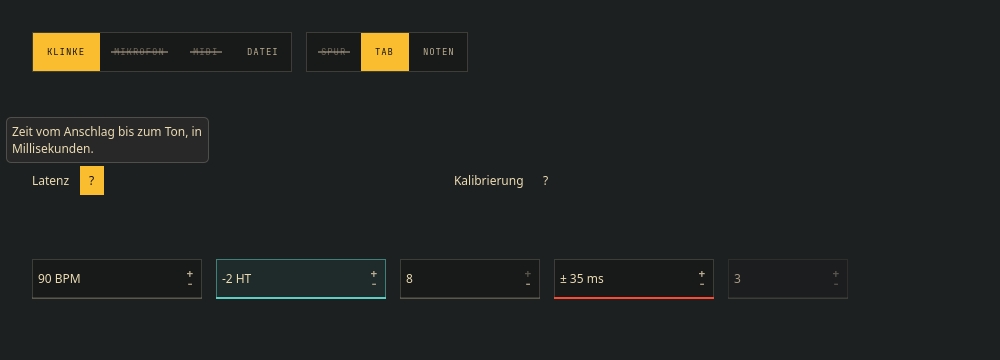
Disabled segments, info tip and spin boxes (demo data)Abgeschaltete Segmente, Info-Tipp und Zahlenfelder (Demodaten) 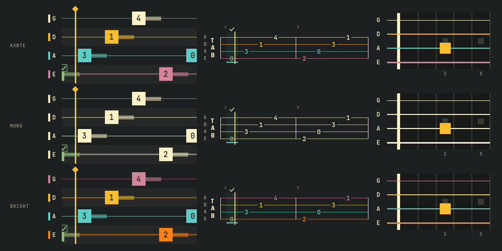
String palettes kante, mono, bright (demo data)Saitenpaletten kante, mono, bright (Demodaten) 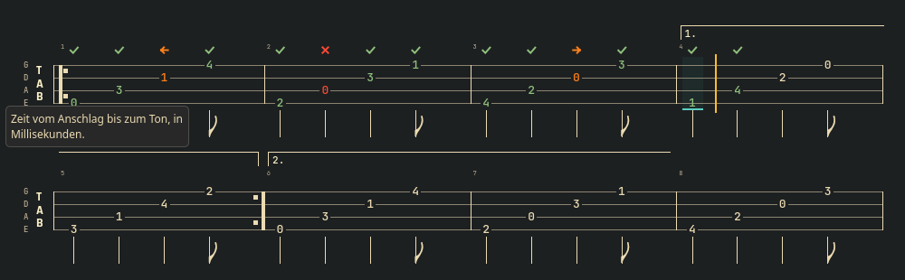
Volta brackets in the tablature (demo data)Wiederholungsklammern in der Tabulatur (Demodaten) -
1.27
Wishes from a QA round of Kontra, the bass trainer: Kante controls instead of light platform ones, a primary action that stands out in Kante Light, steps that differ by shape, and more for the bass staff.
Wünsche aus einer QA-Runde von Kontra, dem Basstrainer: Kante-Bedienelemente statt heller Plattform-Elemente, eine Hauptaktion, die in Kante Light heraussticht, Schritte, die sich in der Form unterscheiden, und mehr für das Bass-Notensystem.
NewNeu
KanteSwitchandKanteComboBox: a switch and a combo box in Kante, the combo box's open list included.- Note state
offpitch: the right note, its pitch off by more than the app's limit. A wave as its sign, the deviation beside it (“+32 ct”). KanteBassStaff: chord symbols per bar or at a time, and a key per bar (naturals only when the key returns to C).
KanteSwitchundKanteComboBox: Schalter und Auswahlfeld in Kante, die offene Liste des Auswahlfelds eingeschlossen.- Notenzustand
offpitch(„unsauber“): der richtige Ton, aber mehr als die Grenze der App verstimmt. Eine Welle als Zeichen, die Abweichung daneben („+32 ct“). KanteBassStaff: Akkordsymbole pro Takt oder an einer Zeit und eine Tonart pro Takt, Auflösungszeichen nur bei der Rückkehr nach C.
ImprovedVerbessert
KanteSteps: done shows a check, the current step a filled number and an outline, upcoming steps a hollow number, so colour is never the only difference (WCAG 1.4.1).
KanteSteps: erledigt zeigt einen Haken, der aktuelle Schritt eine gefüllte Nummer und einen Rahmen, kommende eine hohle Nummer; die Farbe ist nie der einzige Unterschied (WCAG 1.4.1).
FixedBehoben
- Kante Light: the primary button looked like any other. It is now filled in the platform highlight, darkened until its label reads at 4.5:1.
KanteFieldSkin: the combo box arrow is drawn, so it shows without an icon theme.
- Kante Light: der Hauptknopf sah aus wie jeder andere. Er ist jetzt in der Hervorhebungsfarbe der Plattform gefüllt, abgedunkelt, bis seine Beschriftung 4,5:1 erreicht.
KanteFieldSkin: der Pfeil des Auswahlfelds wird gezeichnet und erscheint so auch ohne Symbolthema.
NoteHinweis
- Additions only: existing calls keep working. A plain combo box with
KanteFieldSkinkeeps the style's list; useKanteComboBoxfor a Kante list.
- Nur Ergänzungen: bestehende Aufrufe funktionieren weiter. Ein einfaches Auswahlfeld mit
KanteFieldSkinbehält die Liste des Stils; für eine Kante-ListeKanteComboBoxnehmen.
All changes in 1.27 →Alle Änderungen in 1.27 →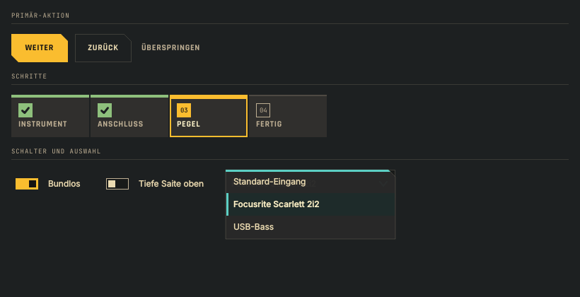
Primary action, steps, switch and combo box (demo data)Hauptaktion, Schritte, Schalter und Auswahlfeld (Demodaten) 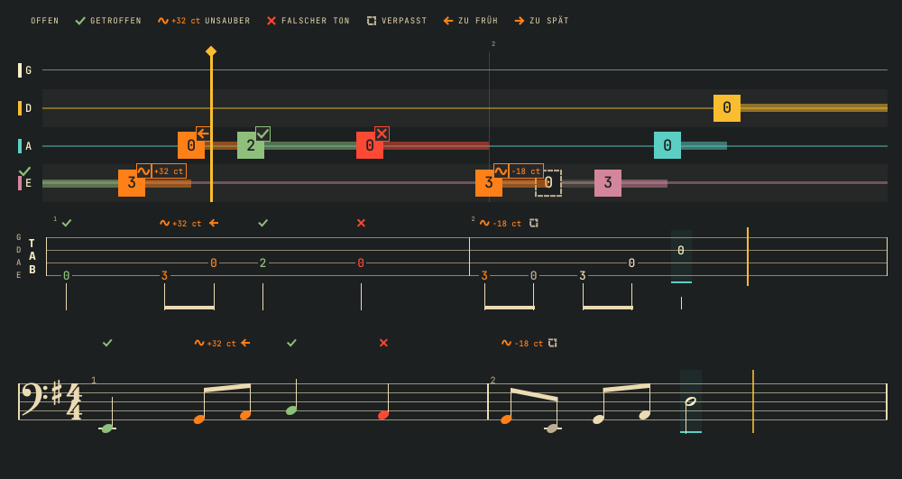
The offpitch state with cents (demo data)Der Zustand „unsauber“ mit Cent (Demodaten) 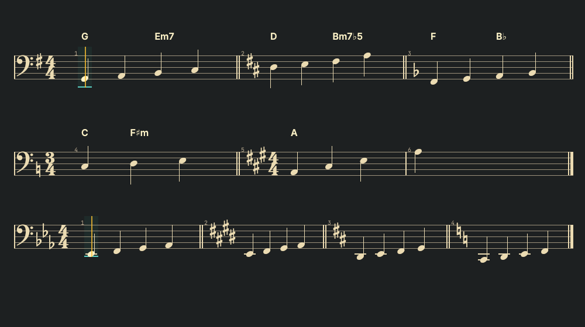
Chord symbols and key changes (demo data)Akkordsymbole und Tonartwechsel (Demodaten)
Earlier releases are listed in the README, one section per version.
Frühere Versionen stehen im README, ein Abschnitt pro Version.